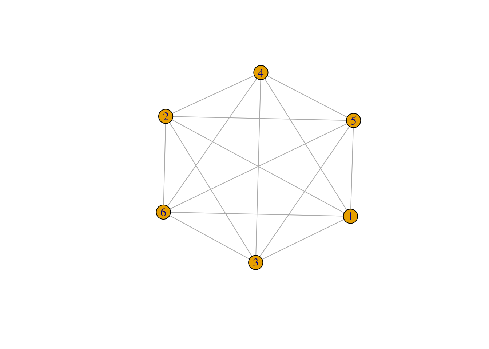
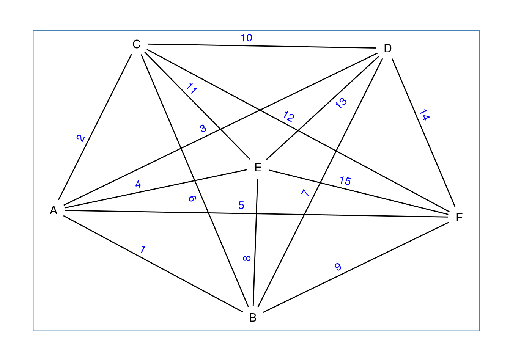
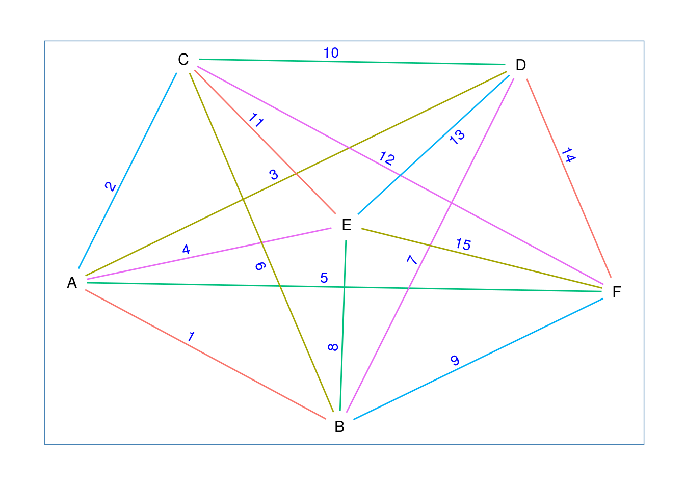

Chapter 5 Hill-Climbing for One-Factorisations
https://jameshoward.us/writing/computational-methods-numerical-analysis-r/
http://www.bnlearn.com/ http://www.bnlearn.com/documentation/man/hc.html
5.1 One-factors
We begin with a complete graph on six vertices. In igraph such a graph can
be generated with the make_full_graph() function.

Next we give the vertices and edges names, to make them easier to refer to.
## Loading required package: ggplot2ggraph(g, layout = 'kk') +
geom_node_text(aes(label = name), size = 4) +
geom_edge_link(aes(label = name), show.legend = FALSE, angle_calc = 'along', label_dodge = unit(3.0, 'mm'), label_push = unit(-6.0, 'mm'), start_cap = circle(4, 'mm'), end_cap = circle(4, 'mm'), label_colour = "blue") +
theme_graph(foreground = 'steelblue', fg_text_colour = 'white')
A one-factor \(f_i\) is a set of edges in which each vertex appears exactly once.
For example,
## + 3/15 edges from 3cd6968 (vertex names):
## [1] A--B C--E D--FE(g)[f1]$factor <- "f1"
ggraph(g, layout = 'kk') +
geom_node_text(aes(label = name), size = 4) +
geom_edge_link(aes(label = name, color = factor), show.legend = FALSE, angle_calc = 'along', label_dodge = unit(2.5, 'mm'), label_push = unit(-6.0, 'mm'), start_cap = circle(4, 'mm'), end_cap = circle(4, 'mm'), label_colour = "blue") +
theme_graph(foreground = 'steelblue', fg_text_colour = 'white')
We need a function to test whether a set of edges constitutes a one-factor or
not. The is_one_factor(f, g) function will test whether or not \(f\) is a one-factor
of \(g\) or not by constructing a graph from the edges of \(f\) and testing whether
this graph has the same vertex set as \(g\) or not.
Using this function we can test, for example, whether \(f1\) is a one-factor of \(g\) or not.
## [1] TRUE5.2 One-factorisations
A one-factorisation is a decomposition of the edge-set of a graph into one-factors.
We can create a one-factorisation that includes \(f1\) as one of its one-factors by creating another four one-factors (\(f2\), \(f3\), \(f4\), and \(f5\) below).
f2 <- c(3, 6, 15)
f3 <- c(5, 8, 10)
f4 <- c(2, 9, 13)
f5 <- c(4, 7, 12)
E(g)[f2]$factor <- "f2"
E(g)[f3]$factor <- "f3"
E(g)[f4]$factor <- "f4"
E(g)[f5]$factor <- "f5"We can test that all of these are, indeed, one-factors.
## [1] TRUEColouring the edges according to which factor they belong to makes it easy to confirm that the one-factors together constitute a one-factorisation.
gg1 <- ggraph(g, layout = 'kk') +
geom_node_text(aes(label = name), size = 4) +
geom_edge_link(aes(label = name, color = factor), show.legend = FALSE, angle_calc = 'along', label_dodge = unit(2.5, 'mm'), label_push = unit(-6.0, 'mm'), start_cap = circle(4, 'mm'), end_cap = circle(4, 'mm'), label_colour = "blue") +
theme_graph(foreground = 'steelblue', fg_text_colour = 'white')
print(gg1)
We can also plot the factors as separate graphs.
## Warning in grid.Call(C_textBounds, as.graphicsAnnot(x$label), x$x, x$y, :
## font family not found in Windows font database
## Warning in grid.Call(C_textBounds, as.graphicsAnnot(x$label), x$x, x$y, :
## font family not found in Windows font database## [[1]]
## [1] 1 11 14
##
## [[2]]
## [1] 3 6 15
##
## [[3]]
## [1] 5 8 10
##
## [[4]]
## [1] 2 9 13
##
## [[5]]
## [1] 4 7 12is_one_factorisation <- function(of, g) {
length(F1) == vcount(g) - 1 && all(sapply(of, is_one_factor, g)) && length(difference(E(g), E(g)[unlist(of)])) == 0
}## [1] TRUE5.3 Heuristics
5.3.1 Heuristic \(H_{1}\)
Choose any vertex \(x\) such that \(x\) does not occur in every partial one-factor of \(F\) (such a vertex is said to be a live point).
Choose any partial one-factor \(f_i\) such that \(x\) does not occur in \(f_i\).
Choose any \(y \neq x\) such that there is no partial one-factor \(f_j\) for which \((f_j,\{x,y\}) \in F\) (we say that \(x\) and \(y\) do not occur together).
if \(y\) does not occur in \(f_i\), then
\(\hspace{1cm}\) Replace \(F\) with \(F \cup \{(f_i,\{x,y\})\}\).
Else there is a pair in \(F\) of the form \((f_i,\{z,y\}) \hspace{0.5cm} (z \neq x)\)
\(\hspace{1cm}\) Replace \(F\) with \(F \cup \{(f_i,\{x,y\})\} \backslash \{(f_i,\{z,y\})\}\).
5.3.2 Heutistic \(H_{2}\)
Choose any partial one-factor \(f_i\) which does not occur in exactly \(n/2\) pairs in \(F\) (such a partial one-factor is said to be live).
Choose any \(x\) and \(y\) such that \(x\) and \(y\) do not occur together in \(f_i\).
if \(x\) and \(y\) do not occur together, then
\(\hspace{1cm}\) Replace \(F\) with \(F \cup \{(f_i,\{x,y\})\}\).
Else there is a pair in \(F\) of the form \((f_j,\{x,y\}) \hspace{0.5cm} (j \neq i)\)
\(\hspace{1cm}\) Replace \(F\) with \(F \cup \{(f_i,\{x,y\})\} \backslash \{(f_j,\{x,y\})\}\).
5.3.2.1 Example
Suppose we are in the process of trying to find a one-factorisation for \(K_6\), and have generated a partial one-factorisation represented by the set \(F\). \[F=\{(f_1,\{4,6\}),(f_1,\{3,5\}),(f_2,\{5,6\}),(f_3\{1,6\}), (f_3\{3,4\}),(f_4,\{2,3\}),(f_4,\{4,5\})\}\] Now apply \(H_1\):
Choose \(x=2\). Live, because it doesn’t appear in \(f_1,f_2,f_3\) or \(f_5\).
Of these four partial one factors, choose \(f_1\).
2 only occurs together with 3 (in \(f_4\)), so pick \(y=5\).
5 already appears in \(f_1\) so \(\{z,y\}=\{3,5\}\). So replace \(F\) by \(F \cup \{(f_1,\{2,5\}) \backslash (f_1,\{3,5\})\}\)
So we have extracted one edge from the one-factorisation and replaced it with another edge, leaving the cost unchanged. If in 3. we had picked 1 then according to the heuristic we should replace \(F\) with \(F \cup (f_1,\{2,1\})\), increasing \(|F|\) by one, and so decreasing the cost by the same. Because the cost cannot increase \(H_1\) is a suitable heuristic for use in a hill-climbing algorithm.
Now apply \(H_2\) to the new one-factorisation \(F_1=F \cup (f_1,\{2,1\})\)
We can pick any of \(f_2, f_3, f_4, f_5\), because all are live. Choose \(f_2\).
Choose \(x=2, y=3\), because neither appear in \(f_2\).
2 and 3 occur together in \(f_4\). So replace \(F_1\) with \(F_1 \cup \{(f_2,\{2,3\}) \backslash (f_4,\{2,3\})\}\)
Again the cost remains unchanged by this procedure, and if in 2. we had chosen \(x=1,y=4\) instead then we would have replaced \(F_1\) with \(F_1 \cup \{(f_2,\{1,4\})\}\) decreasing the cost by one. As with \(H_1\), the cost cannot increase, which makes \(H_2\) a suitable heuristic. The hill-climbing algorithm for constructing one-factorisations which was first given in [9] has a very simple form.
While \(c(F) \neq 0\), do
choose \(r=1\) or \(r=2\) with equal probability
perform \(H_r\)
5.4 Hill-climbing
There is a function hill.climbing.search in the FSelector package.
library(rpart)
data(iris)
evaluator <- function(subset) {
#k-fold cross validation
k <- 5
splits <- runif(nrow(iris))
results = sapply(1:k, function(i) {
test.idx <- (splits >= (i - 1) / k) & (splits < i / k)
train.idx <- !test.idx
test <- iris[test.idx, , drop=FALSE]
train <- iris[train.idx, , drop=FALSE]
tree <- rpart(as.simple.formula(subset, "Species"), train)
error.rate = sum(test$Species != predict(tree, test, type="c")) / nrow(test)
return(1 - error.rate)
})
print(subset)
print(mean(results))
return(mean(results))
}
library(FSelector)
subset <- hill.climbing.search(names(iris)[-5], evaluator)
f <- as.simple.formula(subset, "Species")
print(f)